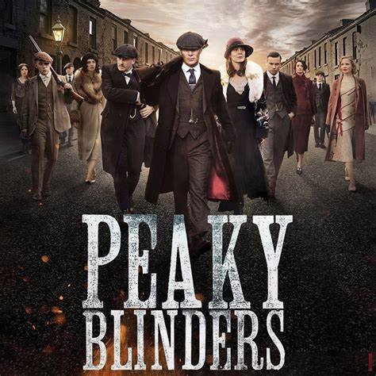

Peaky Blinder
curto: 9/10

Peaky Blinder
sobre jovens ingleses depois da guerra
que ficaram triste e sem emprego e daí começaram
a causar confusão até se emvolverem com crime!
para conhecer mais Clique aqui